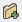
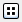

|
|
File Selectors |
File selectors can be used to navigate the file system and select a file. They are opened in most panels by clicking Browse, Read, or Write.
When you first open a particular file selector, the current working directory is the directory (folder) whose contents are displayed. If you navigate to some other location in the file selector, this location is stored and its contents are displayed the next time that file selector is opened.
The Maestro file selectors are similar to most common file selection dialog boxes. Some file selectors have custom features, but every file selector contains the following features
This option menu lists all the parents in the current path, as well as recent locations (the path history). You can use this option menu to select the directory whose contents are displayed in the area below. The latest directory choice is displayed as the selected item in this menu.
These buttons allow you to navigate through the history of the directory choices made, navigate up to the parent directory, or create a new subdirectory (folder) in the current directory.

|
Set the path to the directory above the current directory (the parent directory). |

|
Set the path to the previous value in the path history. |

|
Set the path to the next value in the path history. |
|  | Create a new folder in the current location. |
These buttons allow you to switch betwen a list view and a view that provides details on the files and directories listed.
|  | Show just the file names in a multicolumn, horizontally scrolling format. |

|
Show the file details (name, size, type, date modified) in a tabular, vertically scrolling format. To sort the files, click in the heading of the column you want to sort by. |
This area contains labeled icons for the standard locations for a file. When you select one of these items, the path option menu is updated and the list of files and folders is updated.
This area lists the files and directories (folders) in the current choice of directory.
This text box displays the name of the files or folders chosen in the current directory. Multiple items are listed in quotes, separated by a space. You can type in the name of a file in this directory, with either an absolute or a relative path; and you can type in a path and press ENTER to change directories.
The items on this option menu limit the display of the directory
contents to files of the specified type. For import of files, the option menu
includes a Custom File Filter item, which opens a
dialog box so that you can specify a filter to filter the list of files
displayed; and a Common item, which filters on the
common structure file formats (Maestro, PDB, SD). The standard metacharacters
for file selection on Unix are supported in this filter (such as *
for zero or more characters, ? for one character, and square
brackets enclosing specific characters to match, e.g. [abc]).
This button opens the selected file or files and dismisses the file selector.
|